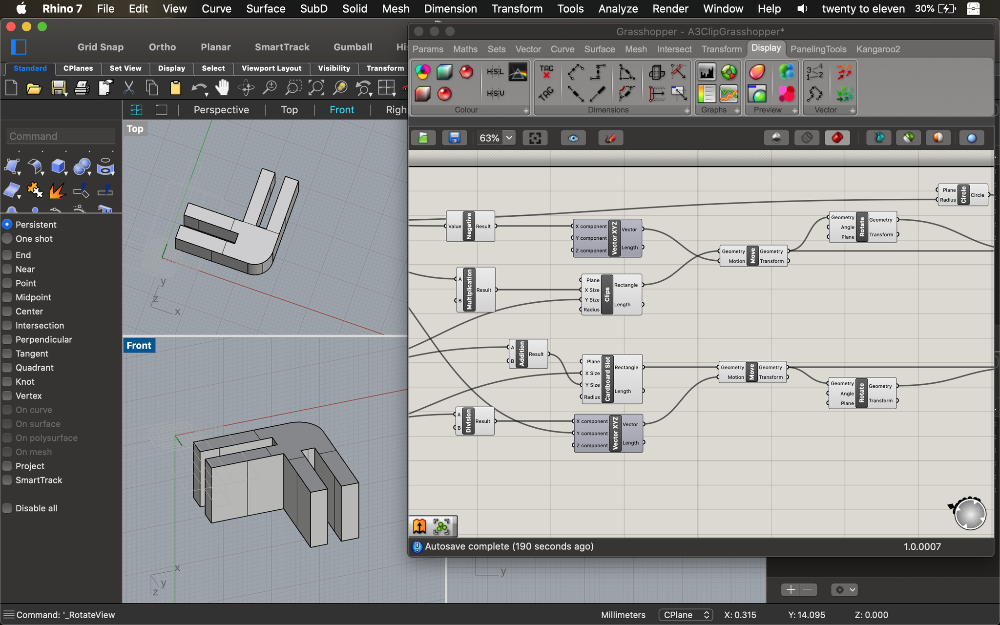
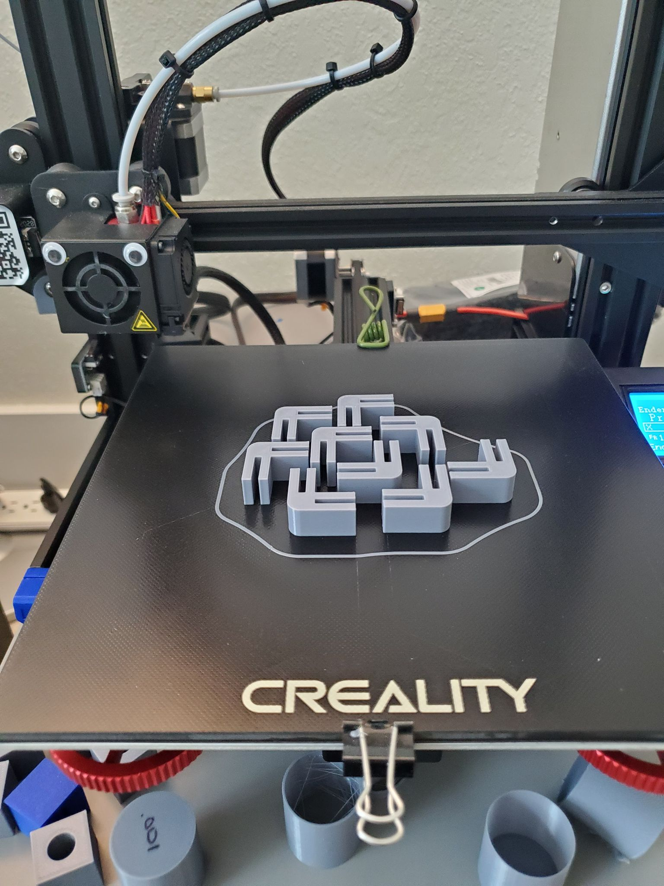
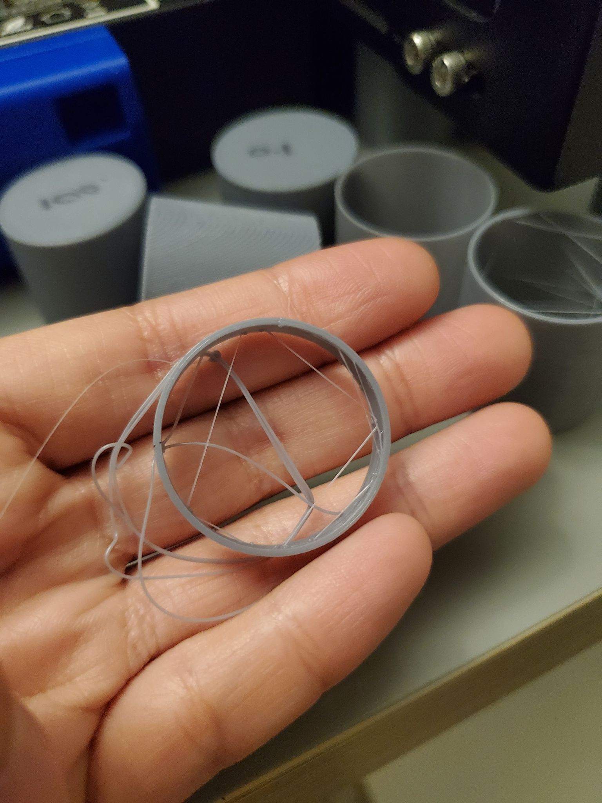

A3: Getting Started with Grasshopper!
In Part 1 of this assignment, I designed 3D clips in Grasshopper. Below is a snapshot view in Grasshopper and Rhino.

I printed out 10 clips using 3D Printer Robi - though I printed 1 to begin with before batch printing the remaining 9.

I performed some cardboard surgery to get the shapes I wanted, to which I clipped together to create "THE PENTABOMB." It's 100% aesthetically cool, but 1000% useless.

Although based on my roll&shake test, I'm pretty sure it's robust enough to injure someone who gets hit by it. Self-defense home weapon?
Grasshopper Definition
Rhino File
STL Results
Oops! Here was a failed test print. Basically, the glass was too slippery, so I added some L'oreal hairspray to increase the stickiness of the bed surface.
